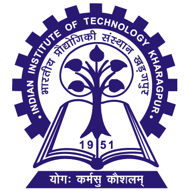

Aarav Mehta
Indian Institute of Technology Kharagpur
B.Tech · Computer Science and Engineering
aarav.mehta@example.com · 23CS10024
Education
| Qualification | Institute | Year | Grade |
|---|---|---|---|
| B.Tech · Computer Science and Engineering | IIT Kharagpur | 2023 – 2027 | 8.42 / 10 |
| Class XII · CBSE | Delhi Public School, Pune | 2023 | 93.2% |
Experience
- Software Engineering InternJun – Jul 2026
- Fictional company: Cedar Labs
- Built internal API endpoints for a support dashboard using Python and PostgreSQL, with input validation and integration tests.
- Investigated slow dashboard queries and added indexes; reduced median response time from 620 ms to 280 ms on the team’s staging dataset.
Selected projects
- Campus room bookingJan – Apr 2026
- Course project · Team of 3
- Developed a booking app with React and Express for shared study rooms, including role-based access and conflict detection.
- Added transaction checks to prevent overlapping reservations and wrote tests for concurrent booking requests.
- Searchable course notesAug – Nov 2025
- Personal project
- Built a Python tool to extract and index text from 120 course PDFs using SQLite full-text search.
- Added filters for course and semester, and documented setup so classmates could run the tool locally.
Technical skills
- Languages: Python, JavaScript, C++, SQL
- Tools & frameworks: React, Express, Flask, PostgreSQL, Git, Linux
- Coursework: Data Structures, Algorithms, Database Systems, Operating Systems
Leadership & involvement
- Peer mentor · Department orientationAug 2025 – Present
- Helped 8 first-year students plan coursework and find academic resources through monthly check-ins.
- Volunteer · Student coding clubJan – Apr 2025
- Co-organised 4 beginner workshops on Python and Git; prepared exercises and helped participants debug their solutions.
Achievements
- Department hackathon finalist, 2025 · Built a campus lost-and-found prototype in a team of 3.
- Completed a 10-week course project with a reproducible benchmark report and documented test cases.
Interests
Badminton, long-distance running, and reading science fiction.